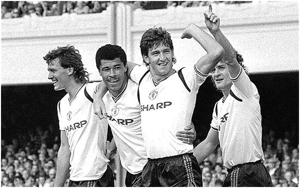
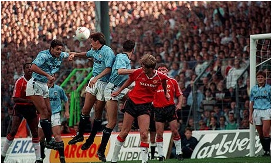

Chương 24

ác cậu ở lại bình an, tớ phắn đây", Gordon Strachan nói cùng đồng đội khi nghe tin Alex Ferguson sắp đến nhậm chức tại Old Trafford.
Là học trò lâu năm của Ferguson ở Aberdeen, Strachan hiểu quá rõ ông thầy. Fergie chẳng khác Hỏa Diệm Sơn, luôn bừng bừng quyết tâm và nhiệt huyết. Ông nổi tiếng là một HLV nóng tính, dữ dội, hét ra lửa. "Cứ chuẩn bị đón bão", Strachan cảnh báo các bạn, "Thắng trận không thuyết phục ông ấy cũng mắng như tát nước vào mặt đấy. Đá thua thì không cần phải nói".
Thế mà lần đầu gặp Ferguson, ai cũng nghĩ Strachan nói điêu. Số là khi mới đến Manchester, Ferguson bị choáng ngợp. “Mọi thứ đều xa xỉ với tôi”, ông nói, “Cơ sở vật chất của United quá tốt. Ở Aberdeen, ngay cả sân tập chúng tôi cũng không có”. Vì choáng ngợp, ông đâm ra căng thẳng. Các cầu thủ còn nhớ: Lần đầu tiên Ferguson đứng ra thông báo đội hình xuất trận, trông ông nhút nhát như…một con mèo, đến tên cầu thủ cũng quên mất. Ông đọc đến tên “Nigel”, cả đội ngẩn người ra, rồi Bryan Robson hỏi:
-Nigel? Nigel là ai thế?
Fergie chỉ vào Peter Davenport:
-Đây này! Nigel Davenport[1]!
Nhưng qua giây phút bỡ ngỡ ban đầu, Ferguson nhanh chóng trở lại là chính mình. Sau trận thua Wimbledon 0-1, ngày 29 tháng 11, 1986, ông nổi trận lôi đình, tập hợp cầu thủ lại, mắng cho một trận không ngóc đầu lên nổi. Học trò ai nấy đều sốc, mặt mày xanh xám. Trong số những người chơi tệ nhất trận, có Peter Barnes, song bấy giờ không thấy anh hiện diện. ‘Thằng đ. Barnes đâu rồi?”, Ferguson vừa hét vừa ngó nghiêng, sục sạo khắp nơi để tìm. Không thấy Barnes, ông chửi đổng một hồi, rồi quay ra chuẩn bị cho cuộc họp báo sau trận đấu, không quên sập cửa đánh rầm, làm rung rinh cả tường. Mấy phút sau, cửa phòng tắm bỗng mở, và một cái đầu thò ra. Chính là Peter Barnes.
“Ổng đi chưa?”, Barnes thẽ thọt.
Té ra lúc Ferguson đi vào, Barnes đang trong phòng tắm. Nghe ông thầy chửi “vung xít chó”, anh hoảng quá nhảy vào trốn trong bồn tắm đầy nước lạnh. Mấy lần Ferguson mở cửa vô kiểm tra, anh nép mình xuống dưới đáy bồn. Cứ thế suốt nửa tiếng đồng hồ, trong khi Ferguson xả giận, Barnes ngâm mình trong nước, đến khi bước ra thì tìm tái, cóng hết cả tay chân!
“Thấy chưa, còn bảo tớ phét lác nữa thôi?”, Strachan đắc ý, “Ổng hiền như mèo hay là ăn thịt người hả? Tớ đã bảo cứ đợi xem mà!”
Từ đó trở đi, những cơn thịnh nộ của Ferguson trở thành món gia vị không thể thiếu tại Old Trafford. Mỗi lúc giận lên, ông cao giọng mắng chửi, đá bàn đá ghế, quăng đồ quăng đạc, không gì không làm. Các cầu thủ United đặt cho ông thầy biệt hiệu: Máy Sấy Tóc, vì khi mắng ai đó, ông có thói quen dí sát mặt người ấy và quát tháo, làm cho tóc tai nạn nhân bay ngược về phía sau như đang bị sấy.
Thế nhưng, Ferguson ít khi giận dữ đến độ mất khôn. Khi ông giận, đó là cái giận đầy tính toán của một cáo già về phương diện tâm lý. Sự nóng giận và những lời chửi rủa được ông sử dụng như một liệu pháp để kích thích cầu thủ nỗ lực hơn lên. Chẳng thế mà ông lại luôn nói: “Giận dữ chẳng có gì sai, vấn đề là phải biết giận đúng lúc đúng chỗ.”
Ferguson không phải lúc nào cũng chửi rủa cầu thủ. Ông biết khi nào cần cương, khi nào cần nhu.Khi cần cương thì ông gầm thét như sư tử hống, nhưng khi cần nhu thì rất mềm dẻo. Đối với từng cá nhân học trò, Ferguson cũng có sự đối xử khác biệt.Có những người “thân lừa ưa nặng”, không đánh không mắng thì khá không nổi, với họ cần phải thật cương.Một số người khác tâm lý quá yếu, càng mắng càng mất tinh thần, với họ cần thật nhu.Lại có những nhân vật tốt nhất không nên đụng đến, như Bryan Robson. Ferguson chẳng bao giờ “sấy” Robson, vì anh là thủ quân có sức ảnh hưởng cực lớn lên toàn đội, cần phải được tôn trọng.
Liệu pháp tâm lý, cũng như các biện pháp cải tổ của Ferguson, không thể đem lại hiệu quả tức thì. Mùa 1986-1987, United chỉ đứng thứ 11. Như thế cũng tàm tạm, vì lực lượng đội yếu nhiều so với những năm đầu thời Ron lớn: Ray Wilkins và Mark Hughes đã ra đi, Gary Bailey chấn thương, phải nghỉ thi đấu đỉnh cao, trong khi các trụ cột còn lại như Robson, Whiteside, và McGrath đều sở hữu những đôi chân pha lê, liên tục dính thương tích. Như đã kể, cả ba cũng là những “hũ chìm” cỡ bự.

Từ trái sang: Robson, McGrath và Whiteside. Đằng sau là Mark Hughes (Ảnh: Telegraph.co.uk)
Trong ba người, Robson uống ít nhất. Hơn nữa, rượu dường như không ảnh hưởng đến phong độ của anh. Người khác uống vào thì chân nam đá chân chiêu, Robson uống xong lại ra sân tập như điên, càng tập càng hăng! Do đó, anh là người duy nhất tại United được HLV trưởng du di về mặt kỷ luật. Ferguson vẫn nhắc nhở Robson hạn chế nhậu nhẹt, nhưng cũng không làm to chuyện. Whiteside và McGrath bê tha hơn; chất cồn bào mòn thể lực, khiến họ không thể lành hẳn chấn thương. McGrath phải trải qua 8 cuộc phẫu thuật đầu gối, còn Whiteside tuổi mới 21 đã bắt đầu mất dần tốc độ. Tuy vậy, do vai trò quá quan trọng của hai người[2], Ferguson kiên nhẫn thuyết phục, tạo cơ hội cho họ “cải tà quy chính”. Ngọt nhạt, nặng nhẹ suốt mất năm trời đều vô hiệu, ông mới bán Whiteside sang Everton, McGrath sang Villa.
Hè 1987, Ferguson lên danh sách, xin mua thêm 8-9 cầu thủ. Chủ tịch Martin Edwards không chấp nhận, một phần vì Ron lớn trước đó đã vung tiền mua sắm quá nhiều, khiến ngân sách chuyển nhượng không còn bao nhiêu, phần khác do chính Edwards đã trở nên căn cơ, sau những năm đầu khá hào phóng. Ferguson buộc phải bước chậm lại: Mỗi mùa chỉ thực hiện hai ba vụ chuyển nhượng quan trọng thôi. Ban đầu, ông đưa về Brian McClair, Steve Bruce, và Viv Anderson; mùa sau mua thêm tài năng trẻ Lee Sharpe, thủ thành Jim Leighton, và đưa Mark Hughes trở lại Old Trafford.
Tháng 8, 1989, xảy ra một bước ngoặt. Trước trận sân nhà đầu tiên của mùa giải mới, người hâm mộ thấy một nhân vật béo lùn, mặc đồng phục United, chạy tung tăng tâng bóng tại Old Trafford. Đó là doanh nhân Michael Knighton. Loa phóng thanh thông báo: Knighton sẽ là ông chủ mới của Manchester United.
Knighton đặt rất nhiều tham vọng cho tương lai. Không những bỏ ra 10 triệu bảng mua lại cổ phần từ Martin Edwards, ông hứa sẽ đầu tư thêm 10 triệu nữa để đại tu Old Trafford cho thật hoành tráng. Từng đặt cược với nhà cái Ladbrokes sẽ khoác áo United trước tuổi 50, ông còn định một khi lên ngồi ghế chủ tịch, sẽ bắt Alex Ferguson đưa mình ra sân ít nhất một lần để thắng cá độ. Thỏa thuận xong xuôi, việc Knighton trở thành tân chủ nhân của Old Trafford tưởng như chỉ còn là vấn đề thời gian. Edwards cũng nghĩ như thế, nên ông mở quỹ cho Ferguson tiêu xài xả láng: Bây giờ mình nghỉ rồi, còn lo gì, có lỗ lã thì gã Knighton phải gánh. Được hưởng lộc trời cho, Fergie bỏ ra 7 triệu bảng mua về 10 cầu thủ, trong đó có Mike Phelan, Neil Webb, Gary Pallister, và Paul Ince. Xui cho Edwards, đúng phút chót, vụ mua lại đội bóng đổ bể, do Knighton chỉ huy động được 19 triệu, thiếu một triệu so với thỏa thuận.
Những thương vụ Ferguson thực hiện đa phần đều thành công. Brian McClair bùng nổ trong mùa 1987-1988, ghi 31 bàn thắng tại các giải. Những năm về sau, anh đá lùi, nên số bàn ít hơn, song lúc nào cũng cống hiến tận tụy. Mark Hughes trở về CLB cũ như cá về nước, vào các năm 1989 và 1991 hai lần được tôn vinh danh hiệu Cầu Thủ Xuất Sắc Nhất Nước Anh (PFA). Paul Ince là lá phổi của tuyến hai United, trong khi Pallister và Bruce hợp thành cặp trung vệ hàng đầu thế giới. Bruce vừa thủ tốt vừa giỏi ghi bàn. Mùa 1990-1991, anh dẫn đầu danh sách phá lưới của đội ở giải VĐQG với 13 bàn thắng (19 tính trên mọi mặt trận).
Bên cạnh việc mua những cầu thủ đã thành danh, Alex Ferguson không quên tạo cơ hội cho các tài năng trẻ. Cánh nhà báo dùng cụm từ “nhi đồng Fergie” (Fergie’s fledglings) để chỉ lứa cầu thủ trẻ được Ferguson sử dụng trong đội hình một vào những năm cuối thập niên 1980. Lứa này gồm những người trưởng thành từ đội trẻ United, hoặc được mua về ngay khi mới 16-17, như Gary Walsh, Lee Martin, Tony Gill, David Wilson, Russell Beardsmore, Deiniol Graham, Mark Robins, Jules Maiorana, và Lee Sharpe. Tuy nhiên, so với “đồng ấu Busby”, “nhi đồng Fergie” không sao sánh bằng. Trong thế hệ này, chỉ duy nhất Lee Sharpe đạt đến đẳng cấp quốc tế. Sharpe giành danh hiệu Cầu Thủ Trẻ Xuất Sắc Nhất Nước Anh mùa 1990-1991, được gọi vào ĐTQG, và trụ lại được ở United cho đến tận năm 1996. Lee Martin và Mark Robins cũng có những đóng góp nhất định.
1986-1990 là giai đoạn tái thiết, củng cố lực lượng, nên tuy có những cá nhân tỏa sáng, thành tích tập thể của United chưa được như ý. Sau ngôi á quân mùa 1987-1988, đội rớt xuống giữa bảng một mùa sau đó. CĐV bắt đầu sốt ruột: Thời Ron lớn ít ra còn có cúp, bây giờ chẳng thấy danh hiệu gì. Ngày 23 tháng 9, 1989, Man đỏ bị Man xanh đánh bại 5-1; niềm tin càng cạn dần. Từ bốn phía, những lời chỉ trích tới tấp bay đến. Người ta đọc thấy trên mặt báo những lời hô hào như “Biết điều thì từ chức ngay”, “Ba năm rồi, toàn là rác rưởi, đừng kiếm cớ nữa”, “Đội bóng quá lớn, mà HLV quá bé”, “Thật phí cả tiền! Fergie cút xéo!”…Huyền thoại George Best tuyên bố không thèm đến sân xem United đá, trong lúc một bộ phận người hâm mộ kêu gọi đánh đổ Ferguson, đưa Bryan Robson lên nắm quyền. Thủ thành Jim Leighton, sau vài màn trình diễn kém cỏi, cũng trở thành vật tế thần. Tạp chí Red Issue vẽ hình Leighton đang cầm…bao cao su, cùng lời quảng cáo “BCS Leighton, bảo đảm chụp gôn không dính trái nào, chắc chắn cầm gì cũng tuột!” Tờ Red News viết thẳng thừng “Thật đau lòng, Alex ạ, khi dưới quyền ông, đội chúng ta chơi như…cứt!”
Trong lúc lượng khán giả đến đến sân ngày càng giảm, BLĐ United vẫn bình chân như vại. Trái với fan hâm mộ, vốn chỉ nhìn vào kết quả bề ngoài, các giám đốc là người trong cuộc, hiểu rõ nhất về nội tình đội bóng. Họ cảm nhận được hiệu quả những công cuộc cải tổ do Alex Ferguson phát động, họ thấy tận mắt hệ thống đào tạo trẻ đang ngày một tốt hơn lên. “Nhi đồng Fergie” không mấy thành công, nhưng lứa tiếp theo sắp sửa ra ràng thì cực kỳ triển vọng, báo trước một tương lai xán lạn. Tóm lại, bất chấp các vấn đề tạm thời, BLĐ biết rằng CLB đang đi đúng hướng. Chính vì thế, họ không những không mất niềm tin, mà còn mời Ferguson gia hạn hợp đồng thêm ba năm, với mức lương tăng lên 100000 bảng một năm.

Man đỏ thua Man xanh 1-5 năm 1989 (Ảnh: Guardian.com)
Chú thích:
[1]Nigel Davenport (1928 - 2013): Diễn viên nổi tiếng người Anh.
[2] Ferguson đánh giá Whiteside khi sung sức ngang ngửa với Kenny Dalglish của Liverpool, còn Ron Atkinson sau này từng nhận xét: Một mình McGrath bằng cả Tony Adams và John Terry cộng lại.